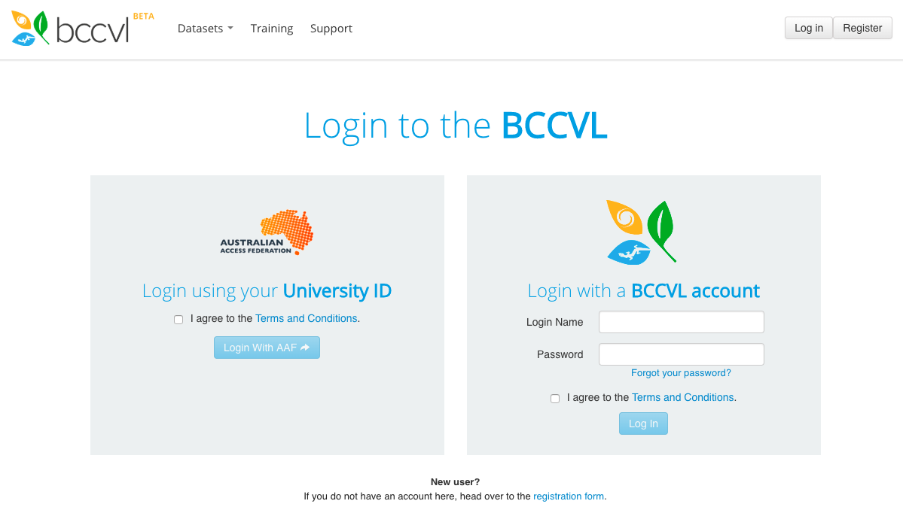

Species Distribution Models & Climate Change projections
In the Biodiversity and Climate Change Virtual Laboratory (BCCVL)
Introduction
Species Distribution Models (SDM) can be used to understand the potential distribution of a species or the environmental suitability of locations based on a set of environmental conditions. This module addresses the fundamental aspects of species distribution models (SDM), the type of data needed for these models, different types of algorithms and evaluation of models as well as an understanding of Climate Change projections to investigate how species distributions might change in the future.
Key Messages
- The design of a Species Distribution Model includes a few important aspects: species data (presence and absence), environmental data, and a modelling algorithm.
- It is important to understand which environmental factors influence your species when you design a Species Distribution Model.
- Depending on your research question, different evaluation statistics might be useful to evaluate the performance of your model.
- The two important components of a Climate Change Projection are the Representative Concentration Pathway (RCP) and the General Circulation Model (GCM).
- There are 4 RCPs, which represent four different climate change scenarios.
Skills to be gained
- Designing a Species Distribution Model and Climate Change projection.
- Understanding differences in generating pseudo-absence records.
- Understanding differences in modelling algorithms.
- Being able to adequately evaluate model outputs.
- Understanding different climate change scenarios (RCP).

Running a Species Distribution Model in the Biodiversity and Climate Change Virtual Laboratory
In this workshop you will use a tool that is designed to effectively run Species Distribution Models under current conditions and then project these into the future under different climate change scenarios. This tool, the Biodiversity and Climate Change Virtual Laboratory (BCCVL), uses the national computational infrastructure of Australia, which means that it doesn’t use the computing capacity of your own computer or laptop. You design your experiment in a web-based environment after which the model will be run in the cloud, and you will be notified when the results are ready. One of the major advantages of using the BCCVL is that you don’t need to know any coding! All the experiments use R scripts in the background, but have a user-friendly point-and-click interface so you can focus on the science instead of how to write the script to run a model.
Anyone with an Australian university account can use the BCCVL with his or her own university credentials. Other users can register and create a BCCVL account.
Log in
- Open your web browser (please do not use Internet Explorer as this often gives issues with visualizing maps; Chrome, Firefox or Safari are all ok).
- Go to www.bccvl.org.au and click the Login button (top right corner).
- This will take you to log in page where you can either use your University credentials (left) or your BCCVL account (right) to log in.
- Once logged in you will be taken to the BCCVL welcome page.
